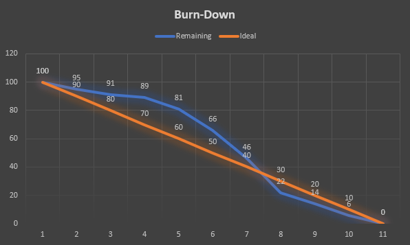
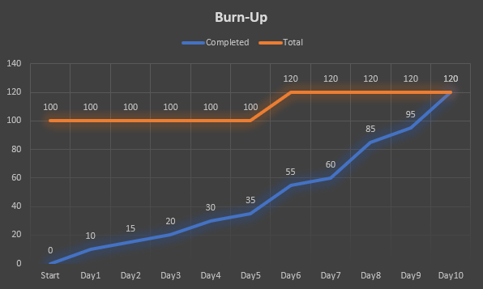
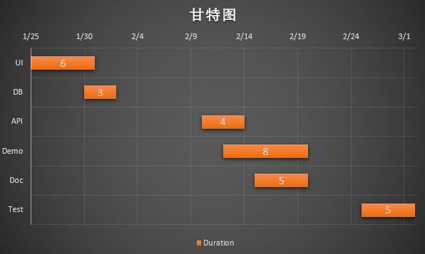
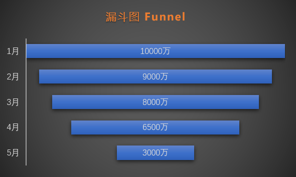

图表篇
Chart
- 折线图 Line
- 展示项目实际工作量与理想工作量的关系

燃尽图 Burn-Down
- 展示项目已完成工作量和总工作量的关系

燃起图 Burn-Up
- 条形图 Bar

甘特图
参考数据
| Phase |
Start |
Duration |
End |
| Initial |
2026-1-26 |
|
2026-1-29 |
| Planning |
2026-1-28 |
|
2026-1-31 |
| UI |
2026-2-1 |
|
2026-2-6 |
| Developement |
2026-2-1 |
|
2026-2-15 |
| Test |
2026-2-16 |
|
2026-2-28 |
| Delivery |
2026-2-28 |
|
2026-3-8 |
- 准备数据：阶段 Phase、起始时间 Start 和结束时间 End
- 在 Start 和 End 之间，增加辅助列数据持续时间 Duration：Start - End
- 定位在数据区/全部数据，插入条形图 → 堆积条形图
- 选择数据 → 删除 End 数据部分；或者直接在图中选择 End 的条目并删除
- 单击左侧垂直轴，在"坐标轴"选项中，选择逆序类别
- 计算日期最小时间值和最大时间值：日期 → 数字
- 选择水平轴，根据换算的数值，调整坐标轴最小值和最大值
- 单位大时间为30，即按30天计算
- 单击条形图的前面数据条部分，设置为白色或透明色，只显示持续时间对应的数据条
- 其它格式调整

漏斗图
- 创建辅助序列；值为其它数据和最大值差值的一半
- 插入条形堆积图
- 调整坐标轴为逆序
- 调整辅助序列到最前面
- 隐藏辅助序列 - 背景透明
- 数据序列显示数据标签
- 居中显示数据序列 - 调整主坐标轴大小为数据最大值
- 隐藏主坐标轴
- 隐藏绘图区网格线
- 设置标签数据格式 - 0"万"
- 其它样式设置